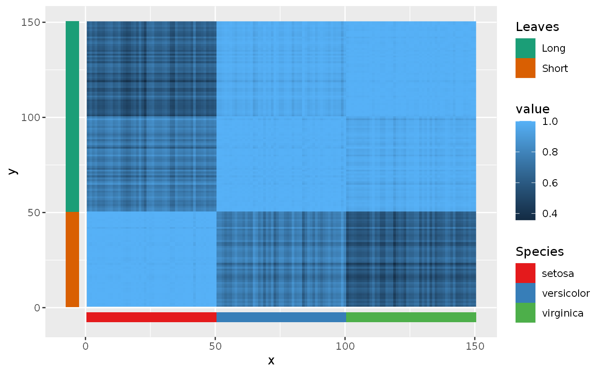

This function should only be called after all layers that the non-standard aesthetic scales affects have been added to the plot.
Inside a layer, the non-standard aesthetic should be part of the call to
aes mapping.
May return a warning that the plot is ignoring unknown aesthetics.
scale_listed(scalelist, replaces = NULL)
| scalelist | A |
|---|---|
| replaces | A |
A list of which the elements are of the class
MultiScale.
Distributes a list of non-standard aesthetics scales to the plot, substituting geom and scale settings as necessary to display the non-standard aesthetics. Useful for mapping different geoms to different scales for example.
# Annotation of heatmap iriscor <- cor(t(iris[, 1:4])) df <- data.frame( x = as.vector(row(iriscor)), y = as.vector(col(iriscor)), value = as.vector(iriscor) ) annotation <- data.frame( z = seq_len(nrow(iris)), Species = iris$Species, Leaves = ifelse(iris$Species == "setosa", "Short", "Long") ) ggplot(df, aes(x, y)) + geom_raster(aes(fill = value)) + geom_tile(data = annotation, aes(x = z, y = -5, spec = Species), height = 5) + geom_tile(data = annotation, aes(y = z, x = -5, leav = Leaves), width = 5) + scale_listed( list(scale_fill_brewer(palette = "Set1", aesthetics = "spec"), scale_fill_brewer(palette = "Dark2", aesthetics = "leav")), replaces = c("fill", "fill") )#> Warning: Ignoring unknown aesthetics: spec#> Warning: Ignoring unknown aesthetics: leav